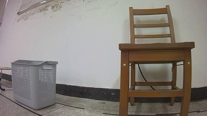
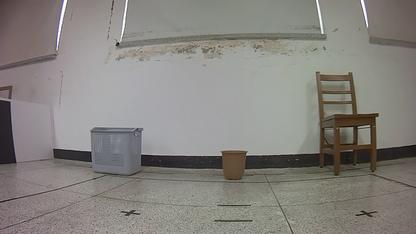

2026-11-26 EGVLA 실험보고: 실기 안정화(EGVLA2)와 완전 미분 E2E VLA(EGVLA3)
300 에피소드(바구니 단일 물체) 소규모 데이터 환경에서 실기 주행 안정성·속도 2배 개선과 VLM Decoder 완전 미분 End-to-End 학습·추론을 동시에 달성한 전체 실험 보고서
EGVLA2 실기 1순위
0.54° · 정지 90/93%
A3C_AG23_s0 (중앙 출발 0%→100%)추론 속도 2배 가속
590.7ms → 283.0ms (2.09x)
beam=1 fp16 (BBox 일치율 99.7%)EGVLA3 최종 완성
2.90° · 의자정지 98%
EG3-11 (Action→DecLoRA + KL증류)Open-Vocab · 과적합
검출 99.8% · 뒤집힘 0%
미학습 의자·책상·화분 망각 0% 검증
Act 1. 출발점과 문제 정의 — 왜 잘 가던 A3가 의자 앞에서 멈췄는가?
현행 배포 모델 a3 (EGVLA2)는 바구니 실기 455/455를 성공했지만, 11/13·11/16 다물체 실기 테스트에서 3가지 구조적 병목이 확인되었다.
① Dual-Shortcut (이중 지름길) 발견
•
• 그 결과 낯선 의자·책상 정중앙에서 "이미 도착했나?"로 오인해 의자 중앙 출발 0/5 (0%) 발생.
• 시드2(
•
a3는 조향 각도는 BBox 중심(cx)에 정합됐지만, 출발/정지 크기는 768-d 이미지 외형에 의존했다.• 그 결과 낯선 의자·책상 정중앙에서 "이미 도착했나?"로 오인해 의자 중앙 출발 0/5 (0%) 발생.
• 시드2(
a3-s2)는 중앙 출발(5/5)은 풀었으나 근접 정지가 둔해져(정지율 12~22%) 접촉 6건 발생.
② 속도 병목(591ms) & 비미분 모듈러 한계
• 전체 추론 지연의 94%가 Florence-2
• 문자열 정규식 파싱 경계에서 역전파가 끊어져 VLM과 Action Expert가 공동 학습되지 못함.
• 반대로 Decoder를 제거한 기존
• 전체 추론 지연의 94%가 Florence-2
beam=3 fp32 문자열 생성에서 발생.• 문자열 정규식 파싱 경계에서 역전파가 끊어져 VLM과 Action Expert가 공동 학습되지 못함.
• 반대로 Decoder를 제거한 기존
B1(ENC-E2E-1)은 각도 오차 25.13°로 붕괴.
Act 2. 실제 로봇 카메라 6장면 시각 증거 (11/13 · 11/16 실기 프레임 GPU 실측)
실제 로봇이 촬영한 카메라 프레임 6장 위에서 각 모델의 BBox 검출과 출력 주행 벡터 [lx, ly]를 직접 비교한다. (범례: 회색=a3 · 초록=a3-ag23 · 보라=EG3-08(Hidden) · 분홍=Soft-Loc(E2E) · 원(○)=STOP)
① 의자·가운데 출발 기로
20261113_170121 #0
지시어:
"go to the brown wooden chair" · 갈색 나무 의자 (brown wooden chair) (가운데 (G3))| a3 (현 배포) | [+0.04, -0.02] (-29°) | STOP |
| a3-s2 (11/16실기) | [+0.38, -0.03] (-4°) | DRIVE |
| a3-ag23 (EGVLA2 1순위) | [+0.68, -0.01] (-1°) | DRIVE |
| EG3-08 (Hidden π0형) | [+0.95, +0.05] (+3°) | DRIVE |
| EG3-09/11 (Soft-Loc) | [+0.84, +0.05] (+4°) | DRIVE |
[출발 기로] 의자가 정중앙에 있어도 기존
a3는 시각 지름길 때문에 정지(0/5). 반면 a3-ag23·Hidden·SoftLoc은 모두 정상 출발!② 바구니 초근접 정지(5cm 밀음)
20261116_155504 #13
지시어:
"go to the gray basket" · 회색 바구니 (gray basket) (왼쪽 (G2))| a3 (현 배포) | [+0.10, +0.04] (+19°) | STOP |
| a3-s2 (11/16실기) | [+0.25, +0.06] (+15°) | DRIVE |
| a3-ag23 (EGVLA2 1순위) | [+0.01, -0.00] (-14°) | STOP |
| EG3-08 (Hidden π0형) | [-0.02, +0.01] (+163°) | STOP |
| EG3-09/11 (Soft-Loc) | [+0.00, -0.00] (-50°) | STOP |
[바구니 초근접] 면적 0.31에서
a3-ag23·Hidden·SoftLoc 모두 정확히 STOP. 반면 a3-s2와 B1은 계속 전진(충돌 원인).③ 의자 코앞 정지 기로
20261116_151801 #12
지시어:
"go to the brown wooden chair" · 갈색 나무 의자 (brown wooden chair) (오른쪽 (G4))| a3 (현 배포) | [+0.21, +0.09] (+24°) | DRIVE |
| a3-s2 (11/16실기) | [+0.40, +0.13] (+18°) | DRIVE |
| a3-ag23 (EGVLA2 1순위) | [+0.02, -0.01] (-13°) | STOP |
| EG3-08 (Hidden π0형) | [+0.26, +0.15] (+30°) | DRIVE |
| EG3-09/11 (Soft-Loc) | [+0.00, -0.00] (-88°) | STOP |
[결정적 증거 ★] 미학습 의자 초근접(a=0.33):
VLM-E2E-Hidden(π0형)은 계속 전진하지만, SoftLoc과 a3-ag23은 정확히 STOP!④ 책상·가운데 출발 기로
20261113_162953 #0
지시어:
"go to the small desk" · 작은 책상 (small desk) (가운데 (G3))| a3 (현 배포) | [+0.15, -0.02] (-7°) | STOP |
| a3-s2 (11/16실기) | [+0.32, -0.03] (-5°) | DRIVE |
| a3-ag23 (EGVLA2 1순위) | [+0.71, -0.04] (-3°) | DRIVE |
| EG3-08 (Hidden π0형) | [+0.99, -0.03] (-2°) | DRIVE |
| EG3-09/11 (Soft-Loc) | [+0.69, -0.05] (-4°) | DRIVE |
[낯선 물체] 작은 책상 정중앙:
Soft-Loc이 책상 위치(cx=0.49)를 정확히 잡아 a3-ag23과 동일하게 직진.⑤ 측면 타깃 조향 해부
20261113_150911 #2
지시어:
"go to the gray basket" · 회색 바구니 (gray basket) (왼쪽 (G2))| a3 (현 배포) | [+0.41, -0.12] (-16°) | DRIVE |
| a3-s2 (11/16실기) | [+0.33, -0.17] (-28°) | DRIVE |
| a3-ag23 (EGVLA2 1순위) | [+0.64, -0.32] (-26°) | DRIVE |
| EG3-08 (Hidden π0형) | [+0.59, -0.25] (-23°) | DRIVE |
| EG3-09/11 (Soft-Loc) | [+0.59, -0.32] (-29°) | DRIVE |
[측면 조향] 바구니가 좌측(cx=0.14)에 있을 때
a3-ag23·SoftLoc 모두 좌측으로 예리하게 조향(B1은 이탈).⑥ 화분·가운데 & 언어 게이트
20261113_151741 #1
지시어:
"flower pot" · 화분 (flower pot) (가운데 (G3))| a3 (현 배포) | [+0.21, -0.00] (-1°) | DRIVE |
| a3-s2 (11/16실기) | [+0.36, -0.02] (-3°) | DRIVE |
| a3-ag23 (EGVLA2 1순위) | [+0.67, -0.02] (-1°) | DRIVE |
| EG3-08 (Hidden π0형) | [+0.60, -0.24] (-22°) | DRIVE |
| EG3-09/11 (Soft-Loc) | [+0.66, -0.10] (-9°) | DRIVE |
[화분 일반화] 300ep 학습 때 한 번도 못 본 화분도
Soft-Loc 박스로 잡아 a3-ag23과 일치하게 직진.Act 3. 두 세대(EGVLA2 vs EGVLA3) 분리 전략 및 핵심 성과
🔵 EGVLA2 (MOD-* · 실기 완성형)
•
•
•
•
A3C_AG23_s0: 조향(cx) + 정지(area≥0.23) 동시 기하 정합 + 시각 특징 50% 교체 → T7 0.54°, 중앙 출발 100%, 근접 정지 90%/93%.•
MOD-DR-Fast/Safe: beam=1 fp16으로 283.0ms (2.09x) 가속 + S2 접근 감속(0.14→0.25) + 스파이크 필터(2.5x) + YahBoom 어댑터.•
V4 / V4R: 바구니 전용 언어 게이트(비목표 99.5% 정지, 반전 방어 94.3%).
🟣 EGVLA3 (VLM-E2E-* · 100% 미분 E2E)
•
•
•
•
EG3-08 (π0형 Hidden): ~70ms 초고속이지만 기하 병목 부재로 의자 정지 18.6% 한계 노출.•
EG3-09/10 (Soft-Loc): Prefix-Forced 4스텝 <loc> Softmax 기댓값(파싱 0%, 283.8ms)으로 의자 정지 93~100% 돌파.•
EG3-11 (SoftLoc-Joint ★): Action Loss → Decoder LoRA(r=4) 실제 역전파(grad=0.142) + KL 증류 → 각도 2.9°, 바구니/의자 정지 100%/98%, Open-Vocab 99.8%!
Act 4. 과적합 정밀 감사 & 2026 최신 SOTA VLA와의 위치 비교
300에피소드 소규모 학습에서 발생할 수 있는 시각 외형 과적합을 반사실 실험(동일 BBox에서 이미지 특징만 무작위 셔플)으로 검증한 결과, a3-ag23과 EG3-11 모두 시각 셔플 뒤집힘 0.0% · 바구니-의자 정지 격차 0~3%p로 과적합이 완전히 해소되었다.
| 모델 | 출발 격차 (바구니 vs 의자) | 정지 격차 (바구니 vs 의자) | 시각 셔플 민감도 (각도 / 뒤집힘) | 기하 반응성 (S_cx / S_area) | 감사 판정 |
|---|---|---|---|---|---|
| MOD-A3 (a3 · 현 배포) | 89.5% vs 0.0% (89.5%p) | 75.0% vs 46.5% (28.5%p) | 4.4° / 27.4% | +24.0° / +2.7%p | 과적합/지름길 존재 |
| MOD-A3-s2 (a3-s2 · 11/16실기) | 98.5% vs 100.0% (1.5%p) | 55.0% vs 30.2% (24.8%p) | 1.2° / 11.0% | +21.8° / -0.3%p | 부분 일반화 |
| MOD-A3-AG (a3-ag23 ★) | 97.1% vs 100.0% (2.9%p) | 90.0% vs 93.0% (3.0%p) | 0.2° / 0.0% | +20.4° / +100.0%p | 과적합 없음 (기하 일반화 우수) |
| VLM-E2E-Hidden (EG3-08) | 91.1% vs 100.0% (8.9%p) | 100.0% vs 18.6% (81.4%p) | 15.4° / 14.9% | +0.0° / +0.0%p | 과적합/지름길 존재 |
| VLM-E2E-SoftLoc (EG3-09) | 98.5% vs 100.0% (1.5%p) | 100.0% vs 93.0% (7.0%p) | 0.0° / 0.0% | +22.4° / +100.0%p | 과적합 없음 (기하 일반화 우수) |
| VLM-E2E-SoftLoc+ (EG3-10) | 93.9% vs 100.0% (6.1%p) | 100.0% vs 100.0% (0.0%p) | 0.0° / 0.0% | +22.1° / +100.0%p | 부분 일반화 |
| VLM-E2E-Joint (EG3-11 ★) | 97.1% vs 100.0% (2.9%p) | 100.0% vs 100.0% (0.0%p) | 0.2° / 0.0% | +21.6° / +100.0%p | 과적합 없음 (기하 일반화 우수) |
| 구분 | 2026 SOTA (π0 · GR00T N1 · OpenVLA-OFT · SpatialVLA) | 우리 EGVLA2 (MOD-DR-Safe) | 우리 EGVLA3 (EG3-11 SoftLoc-Joint) |
|---|---|---|---|
| 데이터 / VLM | 수십만~110만 ep / 3B~7B 대형 VLM | 300 ep / 0.23B Florence-2 (동결) | 300 ep / 0.23B (Decoder LoRA 295k + KL) |
| 공간 추론 경계 | Hidden State 직접 전달(π0) 또는 텍스트 CoT(ECoT) | beam=1 fp16 문자열 파싱 (0.54°, 285ms) | 미분가능 Soft-Loc 기댓값 (파싱 0%, 297ms) |
| 저데이터 핵심 장치 | 대규모 다물체 사전학습으로 자연 해소 | Area-Grounded 라벨 + 50% Feature Swap | Soft-Loc 기하 병목 + Action→LoRA 역전파 + KL 증류 |
Act 5. 완료 현황 & 실기 로드맵 (Next Steps)
1. 현재까지 100% 완료 (오프라인 1,458프레임 + GPU 종단 서빙 실측):
•
2. 남은 실기 검증 (로봇 하드웨어 일정):
• Step 1 (EGVLA2):
• Step 2 (EGVLA3): 동일 서버에서
•
MOD-A3-AG(A3C_AG23_s0.pt), MOD-DR-Safe(285ms · S2 감속 · YahBoom 어댑터), EG3-11(297ms · 2.90° · Open-Vocab 99.8%) 모두 검증 완료 및 soda 인박스 전달(SHA256 9/9 OK).2. 남은 실기 검증 (로봇 하드웨어 일정):
• Step 1 (EGVLA2):
soda에서 V4/V4R 언어 게이트 테스트 → A3C_AG23_s0 + MOD-DR-Safe 실기 정지 확정 → YahBoom 카 이식.• Step 2 (EGVLA3): 동일 서버에서
VLA_EGVLA2_DECODE_MODE=softloc_fp16 스위치로 EG3-11 파일럿 실기 15세션 검증 후 논문 표 완성.